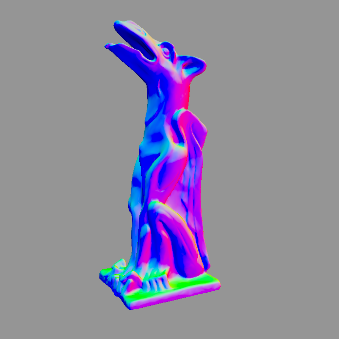
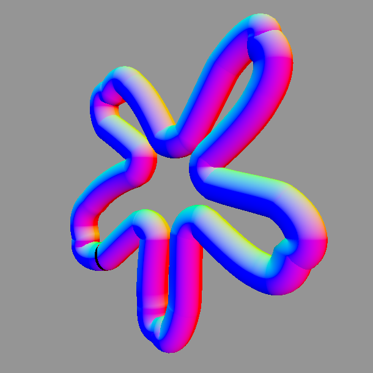
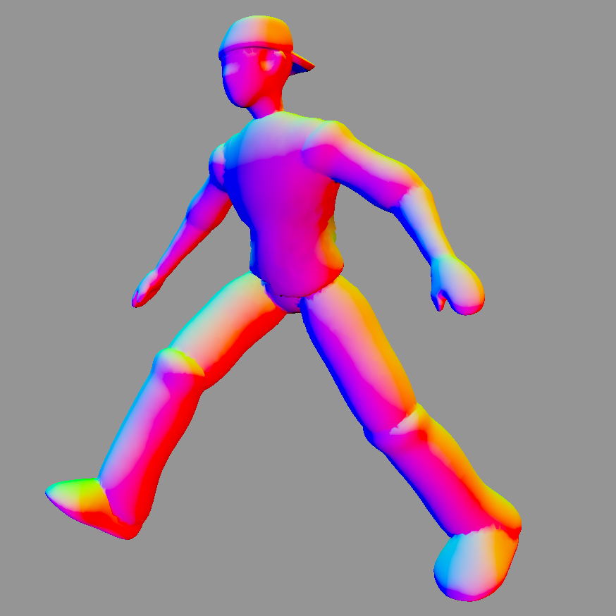
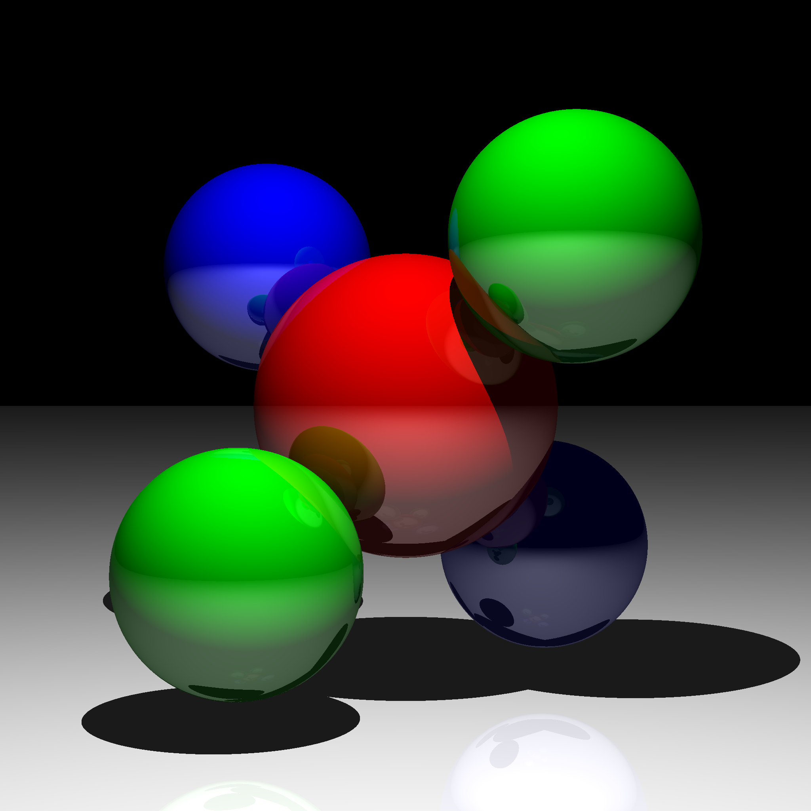
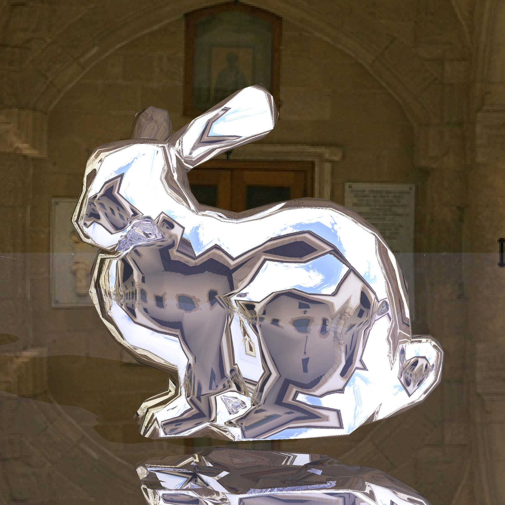
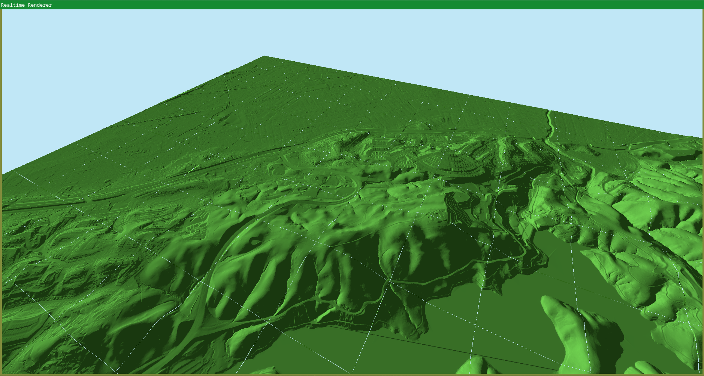

During my junior year of high school, I spent one of my class slots independently doing graphics programming projects.
I used the assignment specifications from MIT’s Fall 2012 Computer Graphics course, timeless exercises covering a range of basic graphics programming concepts.
The graphics stack the assignments prescribed (OpenGL 2, C++03) is heavily out of date. I used their assets so that I wouldn’t have to create new ones, but I wrote the projects from scratch with Rust and wgpu. Annoyingly, this meant I had to write several parsers for their bespoke formats.
All of my implementations adhere to the spirit of the assignments, although a few don’t exactly fulfill the specifications.
The code is available on GitHub, along with instructions for how to run it.
Obj Parser and Renderer
|  | Warmup exercise! This program parses obj
files and renders their models interactively. See the “garg” pictured left. |
Swept Surfaces Renderer
|  | This program triangulates and
interactively renders meshes based on a swept surface
representation. These swept surfaces are defined from bezier curves or B-splines. See the “flircle” pictured left. |
Skeletal Modeling
|  | This program renders and animates skeletal
models with bone hierarchies. The shader is generic and can handle any transformation of any bone hierarchy. However, the program is hardcoded to swing the legs of the input model, since all the sample models have the same bone structure. |
Particle-Based Cloth Simulation
This program models the physics of a cloth — specifically, a flag flapping in the breeze — with a particle based simulation.
Each particle is acted on by forces (gravity, wind, and springs binding the cloth together), and an rk4 numerical integrator, implemented in compute shaders, turns the forces into velocities that allow the cloth’s motion to be simulated in real time.

Basic Raytracer
This program renders basic scenes with a custom raytracer implemented in a compute shader. It is direct illumination only, with one raycast per pixel. I considered trying to implement global illumination, but realized I would have to rearchitect the program and so decided against it, as it is not in the course specification.
 
Terrain Renderer
This was not an assignment specification, but something I did because I had extra time. I found ultra-high resolution heightmap data for Alameda County and used tin-terrain to convert it into chunked meshes at varying levels of detail, which my program then rendered.
You can’t actually see all of Alameda County at once, only the slice of it I processed. Still, the detail is remarkable. Too bad they didn’t have data underneath the waters of Lake Chabot (featured below), it would have been nice to do some water rendering.
